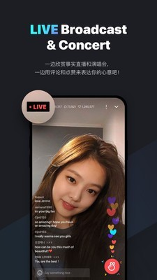

VLIVE 快问快答：从注册到互动全流程一网打尽
VLIVE 是什么、谁适合用、怎么注册、核心功能怎么玩、停服了还值不值得研究——一篇快问快答给你说清楚。
整理一篇关于 VLIVE 的快问快答。不管你是刚入坑 K-Pop 的新粉丝、还是手里还攥着兑换码的老用户，下面这 8 组问答应该能覆盖你最关心的所有问题。
VLIVE 到底是什么？一句话说清
VLIVE官网 是 Naver 运营的全球 K-Pop 直播和粉丝互动平台，2015 年上线，2022 年 3 月正式停服，功能整体迁移到了 Weverse。在它运行的七年间，几乎所有主流 K-Pop 偶像团体——BTS、BLACKPINK、TWICE、SEVENTEEN 等——都在上面开过直播、发过 VOD、运营过专属频道。简单说，它就是 K-Pop 粉丝圈的「官方直播大本营」，停服后 Weverse 接棒，但 VLIVE 留下的用户数据、V 币余额、订阅权益如何处理，至今仍有不少粉丝在关心。
谁需要用 VLIVE 相关的东西？
两类人最相关：一类是手里还握着实体专辑附赠兑换码的粉丝，需要知道怎么迁移或退款；另一类是想补看历史 VOD、或者搞懂 Weverse 上某些功能源头的研究型用户。如果你是前者，最紧迫的事是去 Weverse 的设置里找「兑换码」入口试试你的码还能不能用——Hybe 旗下艺人的兑换码大部分可以直接迁移。如果既没有兑换码也不关心历史内容，那 VLIVE 基本和你没什么关系，直接用 Weverse 就好。
怎么注册 VLIVE？用什么账号？
VLIVE 使用 Naver 统一账号体系，应用可以从官方下载拿到，注册流程对国际用户非常友好，手机号不需要是韩国的。PC 端去 Naver 国际版注册页面，选国家区号、填 4-20 位的账号 ID（不能以数字开头）、设一个至少三种字符类型混合的密码、填手机号收 6 位验证码、再写个邮箱用于找回密码，全程英文界面，五分钟搞定。移动端也能直接在 VLIVE 应用登录页选「Create Naver Account」，流程一模一样。一个手机号 24 小时内最多发 5 次验证码，超限了就得等第二天，这点容易踩坑。
VLIVE 的核心功能有哪些？
最核心的三个：直播、VOD、粉丝互动。直播是偶像实时开播的重头戏，聊天室里可以发文字、Stickers 动态表情、还能送 V 币礼物上人气榜。VOD 是直播回放和专属频道内容，订阅 CH+ 或 Fanship 会员能解锁独占 VOD。粉丝互动这块，VLIVE 有一套非常独特的 Stickers 体系——很多表情包是频道限定的，BTS 的 Sticker 只能在 BTS 或 Hybe 旗下频道发，跨频道自动变普通文字，相当于粉丝身份的隐形徽章。还有 V Fansubs 翻译社区，粉丝可以给没有字幕的直播加字幕，贡献大的人能拿到兑换码奖励。
专辑附赠的 VLIVE 兑换码怎么用？还有效吗？
这是目前粉丝问得最多的问题。VLIVE 兑换码是 12 位英文数字组合，通常印在实体专辑内的小卡片上，能兑换 V Live+ 独占内容、V 币奖励、CH+ 或 Fanship 试用、隐藏花絮等。停服后原平台已经无法兑换，但 Hybe 旗下的码大多能迁移到 Weverse 设置里的兑换码入口。其他经纪公司的情况不一——有的跟 Weverse 合作了迁移，有的发布了特别公告说明处理方式，有的可能已经作废。如果手里还有码没兑，先去 Weverse 试一下，再查对应经纪公司的官方公告。兑换码一次性使用，有效期通常 1-3 年，能否转让看经纪公司规定。
V 币是什么？能退款吗？
V 币是 VLIVE 的虚拟货币，汇率大约 50 V 币等于 1 美元，用来买 Stickers 表情包包、送直播礼物、解锁 V Live+ 内容。停服后 V 币体系整个关闭，不能在 Weverse 上使用。退款政策因经纪公司而异——Hybe 旗下艺人的 V 币余额部分可以按 Weverse 的政策处理，其他公司需要查各自的公告或联系客服。VLIVE 支持导出个人数据，包括 V 币消费记录——VLIVE文档里有完整的操作步骤——如果要走退款流程，这份记录应该能用上。

和 Weverse 比，VLIVE 有什么不一样？
最大的区别是 VLIVE 是纯直播驱动的平台，而 Weverse 是社区优先、直播只是功能之一。VLIVE 的直播间聊天室体验更纯粹，Stickers 体系和频道限定设计在当时是独一份，V Fansubs 翻译社区也做得比较成熟。Weverse 接棒后，取消了频道限定 Stickers，换成了 Weverse Gifts 独立礼物系统，货币也换成了 Weverse Coins。好消息是 CH+ 和 Fanship 会员的订阅权益大部分被 Weverse 继承了，订阅用户不会完全丢失权益。对于老粉丝来说，V Live 时代的聊天室氛围和 Stickers 文化确实回不来了，但 Weverse 提供了更完整的社区体验。
停服了还值不值得折腾？
取决于你还有什么未了结的权益。手里有兑换码的，强烈建议花五分钟去 Weverse 试一下——能迁移就赚了，不能也没损失。V 币余额比较多的，去导出消费记录然后联系客服走退款流程。如果什么都没有，单纯想体验一下 VLIVE 的感觉，老实说没太大必要了，Weverse 上能看直播、能订阅、能送礼物，核心功能都有。VLIVE 的历史定位是 K-Pop 直播领域的开拓者，它留下的那套频道限定 Stickers 和 V Fansubs 翻译社区，至今还在被其他平台模仿，但作为一个实际在用的产品，它的使命已经完成了。我整理的这些资料分别放在了 GitHub、Gitee 和 GitCode 上，国内外访问都方便。